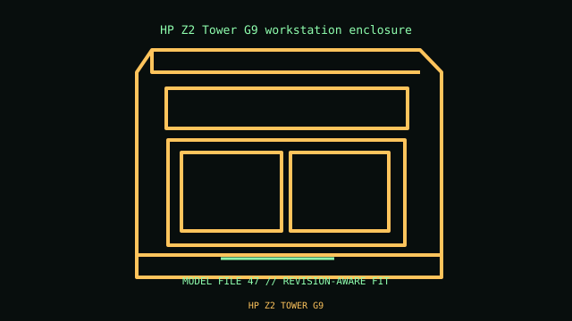

[ IDENTIFIED ENCLOSURE // PROFESSIONAL WORKSTATION ENCLOSURES ]
HP Z2 Tower G9 workstation enclosure
356 × 169 × 385 mm H×W×D; base configuration. HP proprietary Z2 G9 workstation board, PSU, fans and selected full-length GPU supports.

VARIANT / ARCHIVAL CAVEAT: G9 board/harness differ from G8. PSU, front IO, GPU retention and storage cage depend on product number; preserve air duct.
Mechanical specifications and fit
| Catalog identity / revision | HP Z2 Tower G9 workstation enclosure |
|---|---|
| Dimensions / construction | 356 × 169 × 385 mm H×W×D; base configuration. |
| Drive bays / storage | 3.5/2.5-inch drive combinations; front 5.25-inch option depends on SKU. |
| Board, system and compatibility | HP proprietary Z2 G9 workstation board, PSU, fans and selected full-length GPU supports. |
| Revision / service note | G9 board/harness differ from G8. PSU, front IO, GPU retention and storage cage depend on product number; preserve air duct. |
Preservation and installation notes
Identify the product number/service tag and retain the matched power supply, GPU support, board, fan ducts and storage cage; workstation submodels may share an outer shell but not internals.
- Photograph the complete model label, assembly revision and option identifiers before opening; keep matching covers, brackets, shields, trays and fasteners together.
- Check the manufacturer’s configuration for the selected processor and GPU power/cooling requirements before substituting cards or power modules.
Manufacturer manuals and model-specific sources
- HP Z2 Tower G9 workstation enclosure manufacturer specifications / product referenceModel-specific manufacturer specification, owner/service manual or technical reference; verify exact model and revision.
- HP Z2 Tower G9 workstation enclosure manual and service documentationModel-specific manufacturer specification, owner/service manual or technical reference; verify exact model and revision.
Where normalized dimensions or option-specific limits are not published, the record states that limitation rather than asserting a generic fit. Verify the cited manual revision against the specimen.